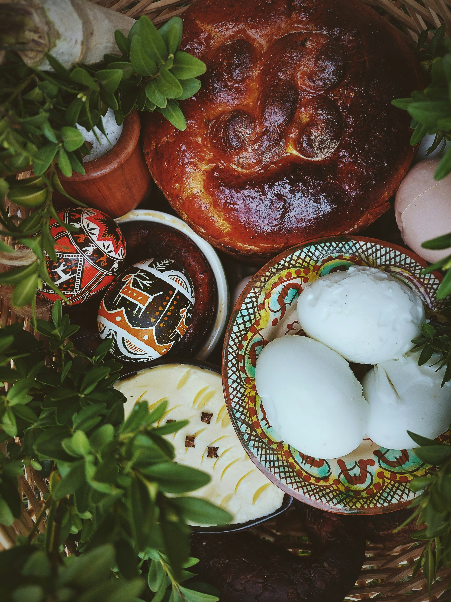

;

;
My family always celebrates Easter together and we try to follow Ukrainian traditions. We gather around the table, exchanging Easter greetings and embracing each other. Together, we say a prayer and express gratitude for the warmth and light of this festive day. Easter is the favourite celebration in my family.